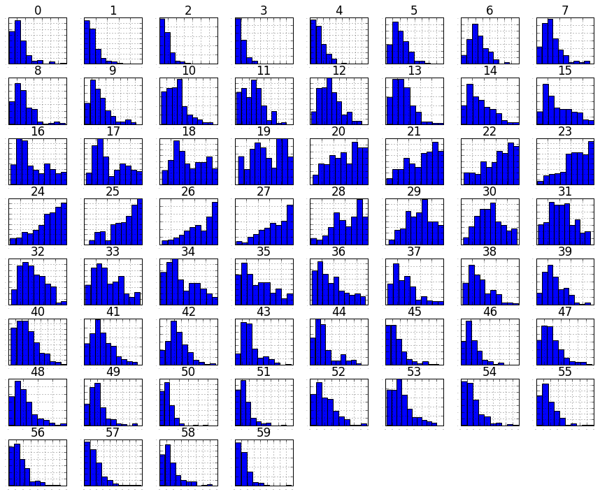
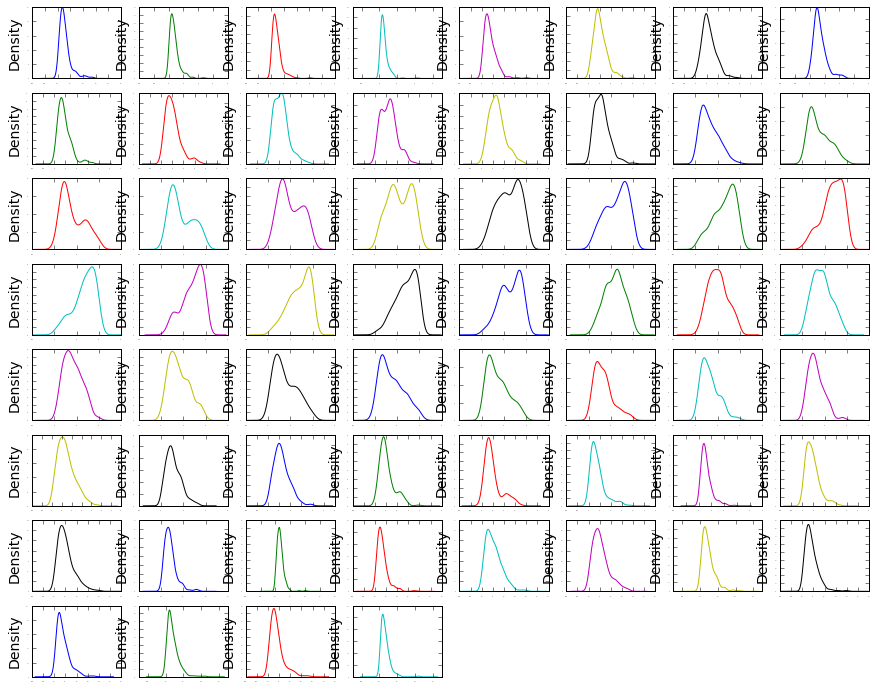
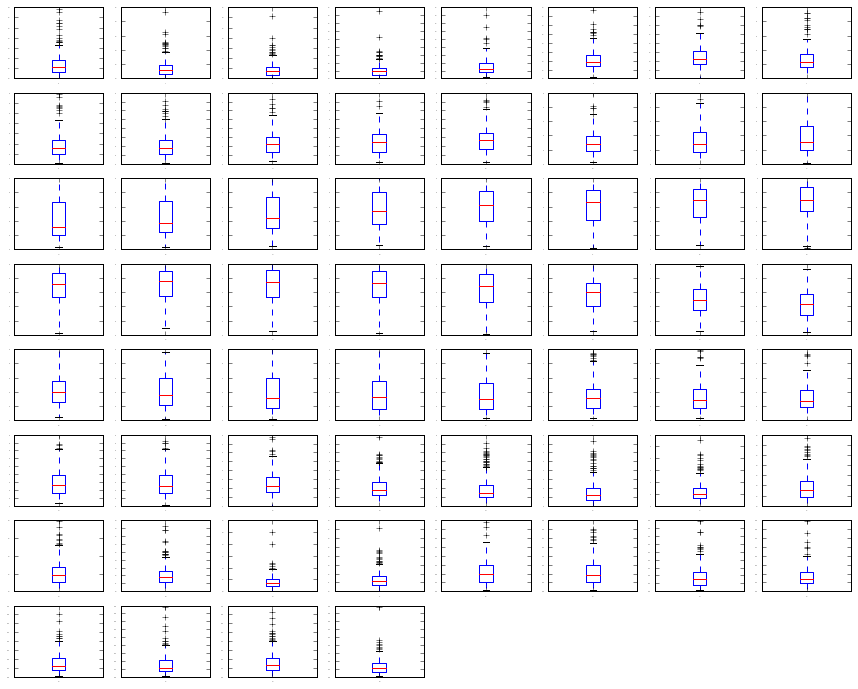
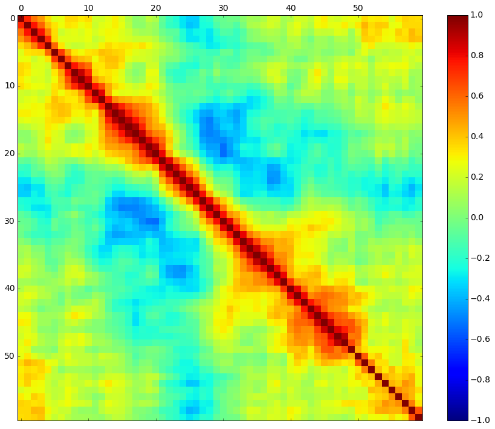
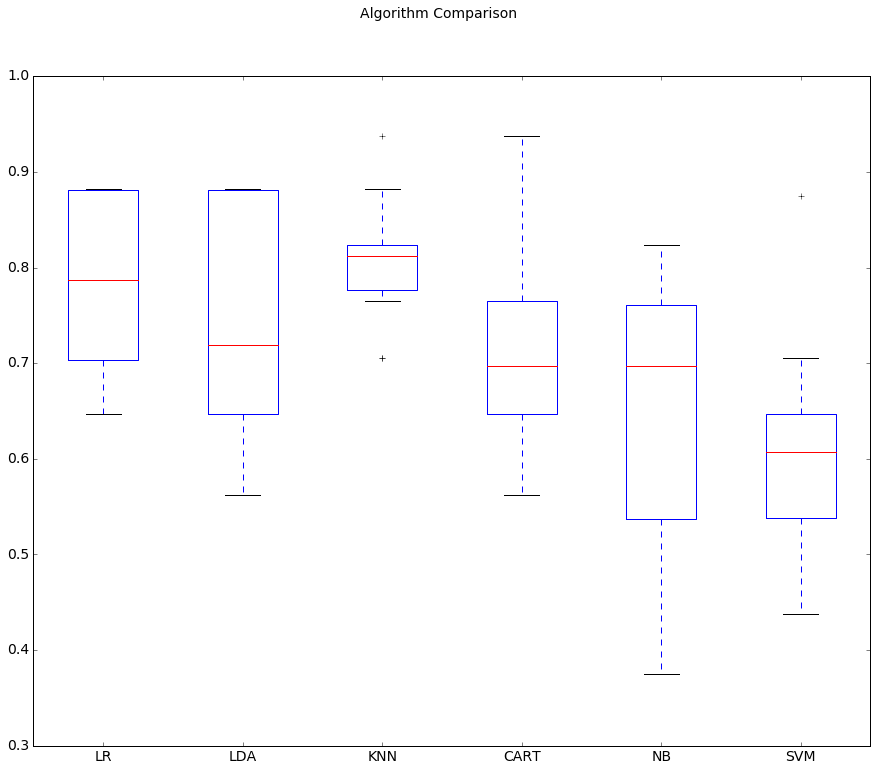
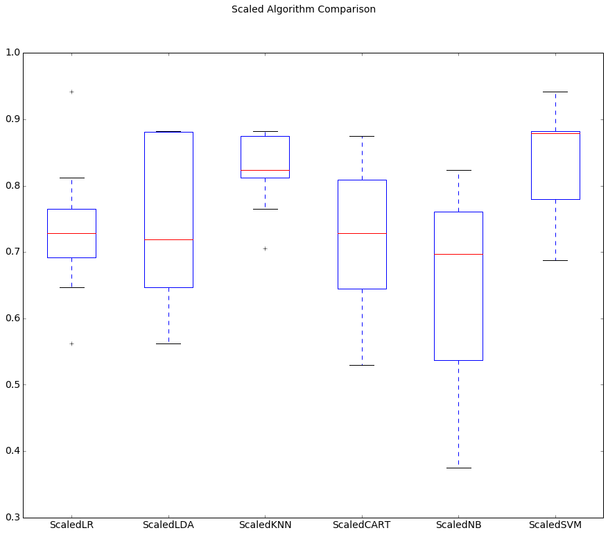
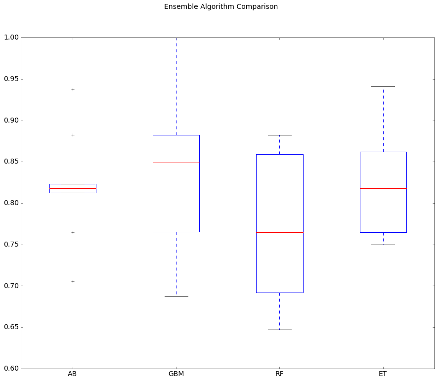

Note: The code here is from Jason Brownlee's machine_learning_mastery_with_python book. It's slightly updated and documented for my educational purpose.
You can get the data set from: [Sonar Mines vs Rocks dataset](https://archive.ics.uci.edu/ml/datasets/Connectionist+Bench+(Sonar,+Mines+vs.+Rocks)
The file "sonar.mines" contains 111 patterns obtained by bouncing sonar signals off a metal cylinder at various angles and under various conditions. The file "sonar.rocks" contains 97 patterns obtained from rocks under similar conditions. The transmitted sonar signal is a frequency-modulated chirp, rising in frequency. The data set contains signals obtained from a variety of different aspect angles, spanning 90 degrees for the cylinder and 180 degrees for the rock.
Each pattern is a set of 60 numbers in the range 0.0 to 1.0. Each number represents the energy within a particular frequency band, integrated over a certain period of time. The integration aperture for higher frequencies occur later in time, since these frequencies are transmitted later during the chirp.
The label associated with each record contains the letter "R" if the object is a rock and "M" if it is a mine (metal cylinder). The numbers in the labels are in increasing order of aspect angle, but they do not encode the angle directly
# Load libraries
%matplotlib inline
import pandas
import numpy
import matplotlib.pyplot as plt
from pandas.tools.plotting import scatter_matrix
from sklearn.preprocessing import StandardScaler
from sklearn import cross_validation
from sklearn.metrics import classification_report
from sklearn.metrics import confusion_matrix
from sklearn.metrics import accuracy_score
from sklearn.pipeline import Pipeline
from sklearn.grid_search import GridSearchCV
from sklearn.linear_model import LogisticRegression
from sklearn.tree import DecisionTreeClassifier
from sklearn.neighbors import KNeighborsClassifier
from sklearn.discriminant_analysis import LinearDiscriminantAnalysis
from sklearn.naive_bayes import GaussianNB
from sklearn.svm import SVC
from sklearn.ensemble import AdaBoostClassifier
from sklearn.ensemble import GradientBoostingClassifier
from sklearn.ensemble import RandomForestClassifier
from sklearn.ensemble import ExtraTreesClassifier
# Set figure size big
# Get current size
fig_size = plt.rcParams["figure.figsize"]
# Set figure width to 12 and height to 9
fig_size[0] = 15
fig_size[1] = 12
plt.rcParams["figure.figsize"] = fig_size
# Set font size
plt.rc("font", size=14)
# Step 2: Load the Dataset
url = "https://goo.gl/NXoJfR"
dataset = pandas.read_csv(url, header=None)
# Step 3: Analyze the data
# shape
print(dataset.shape)
# types
pandas.set_option( 'display.max_rows' , 500)
print(dataset.dtypes)
(208, 61)
0 float64
1 float64
2 float64
3 float64
4 float64
5 float64
6 float64
7 float64
8 float64
9 float64
10 float64
11 float64
12 float64
13 float64
14 float64
15 float64
16 float64
17 float64
18 float64
19 float64
20 float64
21 float64
22 float64
23 float64
24 float64
25 float64
26 float64
27 float64
28 float64
29 float64
30 float64
31 float64
32 float64
33 float64
34 float64
35 float64
36 float64
37 float64
38 float64
39 float64
40 float64
41 float64
42 float64
43 float64
44 float64
45 float64
46 float64
47 float64
48 float64
49 float64
50 float64
51 float64
52 float64
53 float64
54 float64
55 float64
56 float64
57 float64
58 float64
59 float64
60 object
dtype: object
# head
pandas.set_option( 'display.width' , 100)
print(dataset.head(20))
0 1 2 3 4 5 6 7 8 9 ... 51 \
0 0.0200 0.0371 0.0428 0.0207 0.0954 0.0986 0.1539 0.1601 0.3109 0.2111 ... 0.0027
1 0.0453 0.0523 0.0843 0.0689 0.1183 0.2583 0.2156 0.3481 0.3337 0.2872 ... 0.0084
2 0.0262 0.0582 0.1099 0.1083 0.0974 0.2280 0.2431 0.3771 0.5598 0.6194 ... 0.0232
3 0.0100 0.0171 0.0623 0.0205 0.0205 0.0368 0.1098 0.1276 0.0598 0.1264 ... 0.0121
4 0.0762 0.0666 0.0481 0.0394 0.0590 0.0649 0.1209 0.2467 0.3564 0.4459 ... 0.0031
5 0.0286 0.0453 0.0277 0.0174 0.0384 0.0990 0.1201 0.1833 0.2105 0.3039 ... 0.0045
6 0.0317 0.0956 0.1321 0.1408 0.1674 0.1710 0.0731 0.1401 0.2083 0.3513 ... 0.0201
7 0.0519 0.0548 0.0842 0.0319 0.1158 0.0922 0.1027 0.0613 0.1465 0.2838 ... 0.0081
8 0.0223 0.0375 0.0484 0.0475 0.0647 0.0591 0.0753 0.0098 0.0684 0.1487 ... 0.0145
9 0.0164 0.0173 0.0347 0.0070 0.0187 0.0671 0.1056 0.0697 0.0962 0.0251 ... 0.0090
10 0.0039 0.0063 0.0152 0.0336 0.0310 0.0284 0.0396 0.0272 0.0323 0.0452 ... 0.0062
11 0.0123 0.0309 0.0169 0.0313 0.0358 0.0102 0.0182 0.0579 0.1122 0.0835 ... 0.0133
12 0.0079 0.0086 0.0055 0.0250 0.0344 0.0546 0.0528 0.0958 0.1009 0.1240 ... 0.0176
13 0.0090 0.0062 0.0253 0.0489 0.1197 0.1589 0.1392 0.0987 0.0955 0.1895 ... 0.0059
14 0.0124 0.0433 0.0604 0.0449 0.0597 0.0355 0.0531 0.0343 0.1052 0.2120 ... 0.0083
15 0.0298 0.0615 0.0650 0.0921 0.1615 0.2294 0.2176 0.2033 0.1459 0.0852 ... 0.0031
16 0.0352 0.0116 0.0191 0.0469 0.0737 0.1185 0.1683 0.1541 0.1466 0.2912 ... 0.0346
17 0.0192 0.0607 0.0378 0.0774 0.1388 0.0809 0.0568 0.0219 0.1037 0.1186 ... 0.0331
18 0.0270 0.0092 0.0145 0.0278 0.0412 0.0757 0.1026 0.1138 0.0794 0.1520 ... 0.0084
19 0.0126 0.0149 0.0641 0.1732 0.2565 0.2559 0.2947 0.4110 0.4983 0.5920 ... 0.0092
52 53 54 55 56 57 58 59 60
0 0.0065 0.0159 0.0072 0.0167 0.0180 0.0084 0.0090 0.0032 R
1 0.0089 0.0048 0.0094 0.0191 0.0140 0.0049 0.0052 0.0044 R
2 0.0166 0.0095 0.0180 0.0244 0.0316 0.0164 0.0095 0.0078 R
3 0.0036 0.0150 0.0085 0.0073 0.0050 0.0044 0.0040 0.0117 R
4 0.0054 0.0105 0.0110 0.0015 0.0072 0.0048 0.0107 0.0094 R
5 0.0014 0.0038 0.0013 0.0089 0.0057 0.0027 0.0051 0.0062 R
6 0.0248 0.0131 0.0070 0.0138 0.0092 0.0143 0.0036 0.0103 R
7 0.0120 0.0045 0.0121 0.0097 0.0085 0.0047 0.0048 0.0053 R
8 0.0128 0.0145 0.0058 0.0049 0.0065 0.0093 0.0059 0.0022 R
9 0.0223 0.0179 0.0084 0.0068 0.0032 0.0035 0.0056 0.0040 R
10 0.0120 0.0052 0.0056 0.0093 0.0042 0.0003 0.0053 0.0036 R
11 0.0265 0.0224 0.0074 0.0118 0.0026 0.0092 0.0009 0.0044 R
12 0.0127 0.0088 0.0098 0.0019 0.0059 0.0058 0.0059 0.0032 R
13 0.0095 0.0194 0.0080 0.0152 0.0158 0.0053 0.0189 0.0102 R
14 0.0057 0.0174 0.0188 0.0054 0.0114 0.0196 0.0147 0.0062 R
15 0.0153 0.0071 0.0212 0.0076 0.0152 0.0049 0.0200 0.0073 R
16 0.0158 0.0154 0.0109 0.0048 0.0095 0.0015 0.0073 0.0067 R
17 0.0131 0.0120 0.0108 0.0024 0.0045 0.0037 0.0112 0.0075 R
18 0.0010 0.0018 0.0068 0.0039 0.0120 0.0132 0.0070 0.0088 R
19 0.0035 0.0098 0.0121 0.0006 0.0181 0.0094 0.0116 0.0063 R
[20 rows x 61 columns]
# Summarize the data
# descriptions, change precision to 3 places
pandas.set_option( 'precision' , 3)
print(dataset.describe())
0 1 2 3 4 5 6 7 8 9 \
count 208.000 2.080e+02 208.000 208.000 208.000 208.000 208.000 208.000 208.000 208.000
mean 0.029 3.844e-02 0.044 0.054 0.075 0.105 0.122 0.135 0.178 0.208
std 0.023 3.296e-02 0.038 0.047 0.056 0.059 0.062 0.085 0.118 0.134
min 0.002 6.000e-04 0.002 0.006 0.007 0.010 0.003 0.005 0.007 0.011
25% 0.013 1.645e-02 0.019 0.024 0.038 0.067 0.081 0.080 0.097 0.111
50% 0.023 3.080e-02 0.034 0.044 0.062 0.092 0.107 0.112 0.152 0.182
75% 0.036 4.795e-02 0.058 0.065 0.100 0.134 0.154 0.170 0.233 0.269
max 0.137 2.339e-01 0.306 0.426 0.401 0.382 0.373 0.459 0.683 0.711
... 50 51 52 53 54 55 56 \
count ... 208.000 2.080e+02 2.080e+02 208.000 2.080e+02 2.080e+02 2.080e+02
mean ... 0.016 1.342e-02 1.071e-02 0.011 9.290e-03 8.222e-03 7.820e-03
std ... 0.012 9.634e-03 7.060e-03 0.007 7.088e-03 5.736e-03 5.785e-03
min ... 0.000 8.000e-04 5.000e-04 0.001 6.000e-04 4.000e-04 3.000e-04
25% ... 0.008 7.275e-03 5.075e-03 0.005 4.150e-03 4.400e-03 3.700e-03
50% ... 0.014 1.140e-02 9.550e-03 0.009 7.500e-03 6.850e-03 5.950e-03
75% ... 0.021 1.673e-02 1.490e-02 0.015 1.210e-02 1.058e-02 1.043e-02
max ... 0.100 7.090e-02 3.900e-02 0.035 4.470e-02 3.940e-02 3.550e-02
57 58 59
count 2.080e+02 2.080e+02 2.080e+02
mean 7.949e-03 7.941e-03 6.507e-03
std 6.470e-03 6.181e-03 5.031e-03
min 3.000e-04 1.000e-04 6.000e-04
25% 3.600e-03 3.675e-03 3.100e-03
50% 5.800e-03 6.400e-03 5.300e-03
75% 1.035e-02 1.033e-02 8.525e-03
max 4.400e-02 3.640e-02 4.390e-02
[8 rows x 60 columns]
# Class Distribution
# class distribution
print(dataset.groupby(60).size())
60
M 111
R 97
dtype: int64
#We can see that the classes are reasonably balanced between M (mines) and R (rocks)
# Step 3.2: Unimodal Data Visualizations
# histograms
dataset.hist(sharex=False, sharey=False, xlabelsize=1, ylabelsize=1)
plt.show()

# density
dataset.plot(kind= 'density' , subplots=True, layout=(8,8), sharex=False, legend=False,
fontsize=1)
plt.show()

This is useful, you can see that many of the attributes have a skewed distribution. A power transform like a Box-Cox transform that can correct for the skew in distributions might be useful.
# Look at whisker plots to see the spred of the data
# box and whisker plots
dataset.plot(kind= 'box' , subplots=True, layout=(8,8), sharex=False, sharey=False,
fontsize=1)
plt.show()

We can see that attributes do have quite di↵erent spreads. Given the scales are the same, it may suggest some benefit in standardizing the data for modeling to get all of the means lined up.
Step 3.3 - Multimodal Data Visualizations
# Let’s visualize the correlations between the attributes.
# correlation matrix
fig = plt.figure()
ax = fig.add_subplot(111)
cax = ax.matshow(dataset.corr(), vmin=-1, vmax=1, interpolation= 'none' )
fig.colorbar(cax)
plt.show()

It looks like there is also some structure in the order of the attributes.
The red around the diagonal suggests that attributes that are next to each other are generally more correlated with each other.
The blue patches also suggest some moderate negative correlation the further attributes are away from each other in the ordering.
This makes sense if the order of the attributes refers to the angle of sensors for the sonar chirp.
Step 4: Validation Dataset
# Split-out validation dataset
array = dataset.values
X = array[:,0:60].astype(float)
Y = array[:,60]
validation_size = 0.20
seed = 7
X_train, X_validation, Y_train, Y_validation = cross_validation.train_test_split(X, Y,
test_size=validation_size, random_state=seed)
Step 5: Evaluate Algorithms
# Test options and evaluation metric
num_folds = 10
num_instances = len(X_train)
seed = 7
scoring = 'accuracy'
Let’s create a baseline of performance on this problem and spot-check a number of different algorithms.
We will select a suite of different algorithms capable of working on this classification problem.
The six algorithms selected include: 1. Linear Algorithms: Logistic Regression (LR) and Linear Discriminant Analysis (LDA). 2. Nonlinear Algorithms: Classification and Regression Trees (CART), Support Vector 3. Machines (SVM), Gaussian Naive Bayes (NB) and K-Nearest Neighbors (KNN).
# Spot-Check Algorithms
models = []
models.append(( 'LR' , LogisticRegression()))
models.append(( 'LDA' , LinearDiscriminantAnalysis()))
models.append(( 'KNN' , KNeighborsClassifier()))
models.append(( 'CART' , DecisionTreeClassifier()))
models.append(( 'NB' , GaussianNB()))
models.append(( 'SVM' , SVC()))
# display the mean and standard deviation of accuracy for each algorithm as we calculate it and
# collect the results for use later.
results = []
names = []
for name, model in models:
kfold = cross_validation.KFold(n=num_instances, n_folds=num_folds, random_state=seed)
cv_results = cross_validation.cross_val_score(model, X_train, Y_train, cv=kfold, scoring=scoring)
results.append(cv_results)
names.append(name)
msg = "%s: %f (%f)" % (name, cv_results.mean(), cv_results.std())
print(msg)
LR: 0.782721 (0.093796)
LDA: 0.746324 (0.117854)
KNN: 0.808088 (0.067507)
CART: 0.718015 (0.113734)
NB: 0.648897 (0.141868)
SVM: 0.608824 (0.118656)
Running the example provides the output below. The results suggest That both Logistic Regression and K-Nearest Neighbors may be worth further study
These are just mean accuracy values. It is always wise to look at the distribution of accuracy values calculated across cross validation folds. We can do that graphically using box and whisker plots.
# Compare Algorithms
fig = plt.figure()
fig.suptitle( 'Algorithm Comparison' )
ax = fig.add_subplot(111)
plt.boxplot(results)
ax.set_xticklabels(names)
plt.show()

It is possible that the varied distribution of the attributes is having an e↵ect on the accuracy of algorithms such as SVM. In the next section we will repeat this spot-check with a standardized copy of the training dataset.
Step 6: Evaluate Algorithms: Standardize Data
We suspect that the differing distributions of the raw data may be negatively impacting the skill of some of the algorithms.
Let’s evaluate the same algorithms with a standardized copy of the dataset.
This is where the data is transformed such that each attribute has a mean value of zero and a standard deviation of one.
We also need to avoid data leakage when we transform the data.
A good way to avoid leakage is to use pipelines that standardize the data and build the model for each fold in the cross validation test harness.
That way we can get a fair estimation of how each model with standardized data might perform on unseen data.
# Standardize the dataset
pipelines = []
pipelines.append(( 'ScaledLR' , Pipeline([( 'Scaler' , StandardScaler()),( 'LR' ,LogisticRegression())])))
pipelines.append(( 'ScaledLDA' , Pipeline([( 'Scaler' , StandardScaler()),( 'LDA' , LinearDiscriminantAnalysis())])))
pipelines.append(( 'ScaledKNN' , Pipeline([( 'Scaler' , StandardScaler()),( 'KNN' ,KNeighborsClassifier())])))
pipelines.append(( 'ScaledCART' , Pipeline([( 'Scaler' , StandardScaler()),( 'CART' , DecisionTreeClassifier())])))
pipelines.append(( 'ScaledNB' , Pipeline([( 'Scaler' , StandardScaler()),( 'NB' , GaussianNB())])))
pipelines.append(( 'ScaledSVM' , Pipeline([( 'Scaler' , StandardScaler()),( 'SVM' , SVC())])))
results = []
names = []
for name, model in pipelines:
kfold = cross_validation.KFold(n=num_instances, n_folds=num_folds, random_state=seed)
cv_results = cross_validation.cross_val_score(model, X_train, Y_train, cv=kfold,
scoring=scoring)
results.append(cv_results)
names.append(name)
msg = "%s: %f (%f)" % (name, cv_results.mean(), cv_results.std())
print(msg)
ScaledLR: 0.734191 (0.095885)
ScaledLDA: 0.746324 (0.117854)
ScaledKNN: 0.825735 (0.054511)
ScaledCART: 0.722794 (0.101516)
ScaledNB: 0.648897 (0.141868)
ScaledSVM: 0.836397 (0.088697)
We can see that KNN is still doing well, even better than before.
We can also see that the standardization of the data has lifted the skill of SVM to be the most accurate algorithm tested so far.
# Distribution of accuracy scores
# Compare Algorithms
fig = plt.figure()
fig.suptitle( 'Scaled Algorithm Comparison' )
ax = fig.add_subplot(111)
plt.boxplot(results)
ax.set_xticklabels(names)
plt.show()

The results suggest digging deeper into the SVM and KNN algorithms. It is very likely that configuration beyond the default may yield even more accurate models.
Step 7: Algorithm Tuning
we investigate tuning the parameters for two algorithms that show promise from the spot-checking in the previous section: KNN and SVM.
Step 7.1 : Tuning KNN
We can start off by tuning the number of neighbors for KNN. The default number of neighbors is 7. Below we try all odd values of K from 1 to 21, covering the default value of 7.
Each K valueis evaluated using 10-fold cross validation on the training standardized dataset.
scaler = StandardScaler().fit(X_train)
rescaledX = scaler.transform(X_train)
neighbors = [1,3,5,7,9,11,13,15,17,19,21]
param_grid = dict(n_neighbors=neighbors)
model = KNeighborsClassifier()
kfold = cross_validation.KFold(n=num_instances, n_folds=num_folds, random_state=seed)
grid = GridSearchCV(estimator=model, param_grid=param_grid, scoring=scoring, cv=kfold)
grid_result = grid.fit(rescaledX, Y_train)
print("Best: %f using %s" % (grid_result.best_score_, grid_result.best_params_))
for params, mean_score, scores in grid_result.grid_scores_:
print("%f (%f) with: %r" % (scores.mean(), scores.std(), params))
Best: 0.849398 using {'n_neighbors': 1}
0.850000 (0.059686) with: {'n_neighbors': 1}
0.837132 (0.066014) with: {'n_neighbors': 3}
0.837500 (0.037377) with: {'n_neighbors': 5}
0.763971 (0.089374) with: {'n_neighbors': 7}
0.751471 (0.087051) with: {'n_neighbors': 9}
0.733456 (0.104831) with: {'n_neighbors': 11}
0.733088 (0.105806) with: {'n_neighbors': 13}
0.727941 (0.076148) with: {'n_neighbors': 15}
0.709926 (0.079287) with: {'n_neighbors': 17}
0.722059 (0.085088) with: {'n_neighbors': 19}
0.710294 (0.109505) with: {'n_neighbors': 21}
Step 7.2:Tuning SVM
We can tune two key parameters of the SVM algorithm, the value of C (how much to relax the margin) and the type of kernel.
The default for SVM (the SVC class) is to use the Radial Basis Function (RBF) kernel with a C value set to 1.0.
Like with KNN, we will perform a grid search using 10-fold cross validation with a standardized copy of the training dataset.
We will try a number of simpler kernel types and C values with less bias and more bias (less than and more than 1.0 respectively).
# Tune scaled SVM
scaler = StandardScaler().fit(X_train)
rescaledX = scaler.transform(X_train)
c_values = [0.1, 0.3, 0.5, 0.7, 0.9, 1.0, 1.3, 1.5, 1.7, 2.0]
kernel_values = [ 'linear' , 'poly' , 'rbf' , 'sigmoid' ]
param_grid = dict(C=c_values, kernel=kernel_values)
model = SVC()
kfold = cross_validation.KFold(n=num_instances, n_folds=num_folds, random_state=seed)
grid = GridSearchCV(estimator=model, param_grid=param_grid, scoring=scoring, cv=kfold)
grid_result = grid.fit(rescaledX, Y_train)
print("Best: %f using %s" % (grid_result.best_score_, grid_result.best_params_))
for params, mean_score, scores in grid_result.grid_scores_:
print("%f (%f) with: %r" % (scores.mean(), scores.std(), params))
Best: 0.867470 using {'kernel': 'rbf', 'C': 1.5}
0.758456 (0.099483) with: {'kernel': 'linear', 'C': 0.1}
0.529412 (0.118825) with: {'kernel': 'poly', 'C': 0.1}
0.573162 (0.130930) with: {'kernel': 'rbf', 'C': 0.1}
0.409559 (0.073625) with: {'kernel': 'sigmoid', 'C': 0.1}
0.746324 (0.109507) with: {'kernel': 'linear', 'C': 0.3}
0.642647 (0.132187) with: {'kernel': 'poly', 'C': 0.3}
0.765809 (0.091692) with: {'kernel': 'rbf', 'C': 0.3}
0.409559 (0.073625) with: {'kernel': 'sigmoid', 'C': 0.3}
0.740074 (0.082636) with: {'kernel': 'linear', 'C': 0.5}
0.680147 (0.098595) with: {'kernel': 'poly', 'C': 0.5}
0.788235 (0.064190) with: {'kernel': 'rbf', 'C': 0.5}
0.409559 (0.073625) with: {'kernel': 'sigmoid', 'C': 0.5}
0.746691 (0.084198) with: {'kernel': 'linear', 'C': 0.7}
0.740074 (0.127908) with: {'kernel': 'poly', 'C': 0.7}
0.812500 (0.085513) with: {'kernel': 'rbf', 'C': 0.7}
0.409559 (0.073625) with: {'kernel': 'sigmoid', 'C': 0.7}
0.758824 (0.096520) with: {'kernel': 'linear', 'C': 0.9}
0.770221 (0.102510) with: {'kernel': 'poly', 'C': 0.9}
0.836397 (0.088697) with: {'kernel': 'rbf', 'C': 0.9}
0.409559 (0.073625) with: {'kernel': 'sigmoid', 'C': 0.9}
0.752574 (0.098883) with: {'kernel': 'linear', 'C': 1.0}
0.788235 (0.108418) with: {'kernel': 'poly', 'C': 1.0}
0.836397 (0.088697) with: {'kernel': 'rbf', 'C': 1.0}
0.409559 (0.073625) with: {'kernel': 'sigmoid', 'C': 1.0}
0.769853 (0.106086) with: {'kernel': 'linear', 'C': 1.3}
0.818382 (0.107151) with: {'kernel': 'poly', 'C': 1.3}
0.848162 (0.080414) with: {'kernel': 'rbf', 'C': 1.3}
0.409559 (0.073625) with: {'kernel': 'sigmoid', 'C': 1.3}
0.758088 (0.092026) with: {'kernel': 'linear', 'C': 1.5}
0.830147 (0.110255) with: {'kernel': 'poly', 'C': 1.5}
0.866176 (0.091458) with: {'kernel': 'rbf', 'C': 1.5}
0.409559 (0.073625) with: {'kernel': 'sigmoid', 'C': 1.5}
0.746324 (0.090414) with: {'kernel': 'linear', 'C': 1.7}
0.830515 (0.116706) with: {'kernel': 'poly', 'C': 1.7}
0.860294 (0.088281) with: {'kernel': 'rbf', 'C': 1.7}
0.409559 (0.073625) with: {'kernel': 'sigmoid', 'C': 1.7}
0.758456 (0.094064) with: {'kernel': 'linear', 'C': 2.0}
0.830882 (0.108950) with: {'kernel': 'poly', 'C': 2.0}
0.866176 (0.095166) with: {'kernel': 'rbf', 'C': 2.0}
0.409559 (0.073625) with: {'kernel': 'sigmoid', 'C': 2.0}
Step 8: Ensemble Methods
In this section we will evaluate four di↵erent ensemble machine learning algorithms, two boosting and two bagging methods:
- Boosting Methods: AdaBoost (AB) and Gradient Boosting (GBM).
- Bagging Methods: Random Forests (RF) and Extra Trees (ET).
We will use the same test harness as before, 10-fold cross validation. No data standardization is used in this case because all four ensemble algorithms are based on decision trees that are less sensitive to data distributions.
# ensembles
ensembles = []
ensembles.append(( 'AB' , AdaBoostClassifier()))
ensembles.append(( 'GBM' , GradientBoostingClassifier()))
ensembles.append(( 'RF' , RandomForestClassifier()))
ensembles.append(( 'ET' , ExtraTreesClassifier()))
results = []
names = []
for name, model in ensembles:
kfold = cross_validation.KFold(n=num_instances, n_folds=num_folds, random_state=seed)
cv_results = cross_validation.cross_val_score(model, X_train, Y_train, cv=kfold,
scoring=scoring)
results.append(cv_results)
names.append(name)
msg = "%s: %f (%f)" % (name, cv_results.mean(), cv_results.std())
print(msg)
AB: 0.819853 (0.058293)
GBM: 0.841912 (0.103125)
RF: 0.766176 (0.088054)
ET: 0.818750 (0.061300)
# Compare Algorithms
fig = plt.figure()
fig.suptitle( 'Ensemble Algorithm Comparison' )
ax = fig.add_subplot(111)
plt.boxplot(results)
ax.set_xticklabels(names)
plt.show()

The results suggest GBM may be worthy of further study, with a strong mean and a spread that skews up towards high 90s (%) in accuracy.
Step 9: Finalize the Model
The SVM showed the most promise as a low complexity and stable model for this problem. In this section we will finalize the model by training it on the entire training dataset and make predictions for the hold-out validation dataset to confirm our findings. A part of the findings was that SVM performs better when the dataset is standardized so that all attributes have a mean value of zero and a standard deviation of one. We can calculate this from the entire training dataset and apply the same transform to the input attributes from the validation dataset.
# prepare the model
scaler = StandardScaler().fit(X_train)
rescaledX = scaler.transform(X_train)
model = SVC(C=1.5)
model.fit(rescaledX, Y_train)
# estimate accuracy on validation dataset
rescaledValidationX = scaler.transform(X_validation)
predictions = model.predict(rescaledValidationX)
print(accuracy_score(Y_validation, predictions))
print(confusion_matrix(Y_validation, predictions))
print(classification_report(Y_validation, predictions))
0.857142857143
[[23 4]
[ 2 13]]
precision recall f1-score support
M 0.92 0.85 0.88 27
R 0.76 0.87 0.81 15
avg / total 0.86 0.86 0.86 42